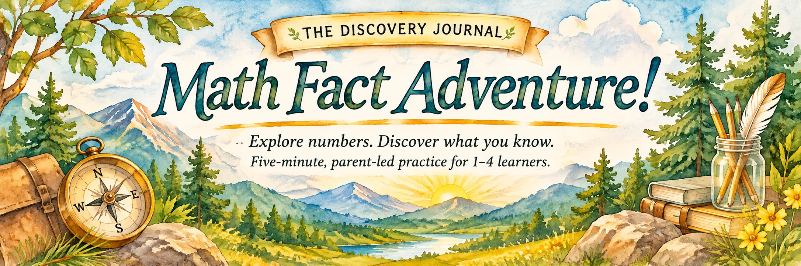

Learning journal
Math settings for this round
Choose operations and a fluency stage for each child. Suggested ages are guides, not limits. Original number sentences, missing-number challenges, and story problems support all five stages.
Take your time. Say it aloud or type it, then keep discovering.
✎ Field guide · How to play
Field Guide: How to Play
Choose verbal practice with an adult, or type your own answers for automatic checking. For verbal practice, one adult reads each question aloud. The player answers without looking at the screen. Mark Correct, With help or Needs practice. The answer is shown after marking. A hint-assisted answer counts separately from independent mastery. Hints are optional. Missed facts are tracked for the next games, with no account required.
Original practice: Every task is generated from arithmetic in this game. No commercial worksheet or answer-key collection is included.
Offline: Download the standalone Math Fact Adventure and open it in a browser. The downloaded copy needs no server, login, API key, or internet. Saved progress belongs to the browser and address you use; export a backup before moving between the website and downloaded copy.
Original FaithSparks practice. Share the game link; learner names and progress stay on their own device. No curriculum-provider affiliation is implied.